问题不是“不提醒”，而是提醒太像命令。
儿童饮水行为需要即时反馈、低压力引导和家庭协作。把研究内容拆成可展开卡片，让阅读节奏更轻。
Smart Water Companion
用童趣反馈和亲子陪伴，把“喝水提醒”变成孩子愿意参与的小任务。
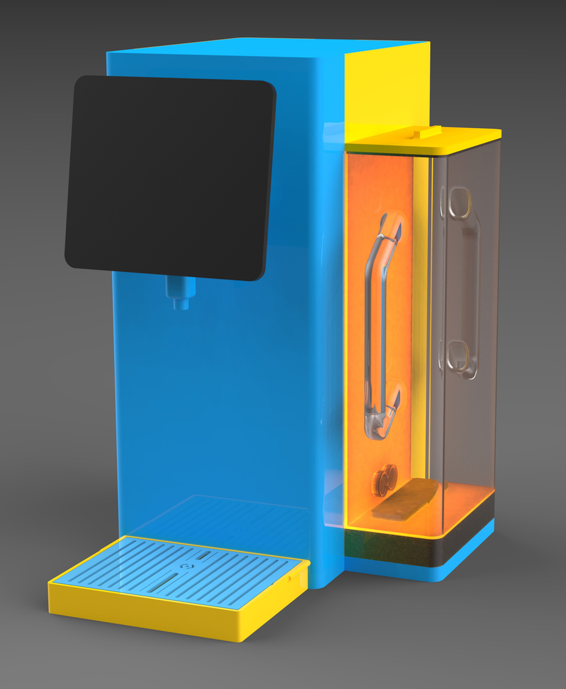
儿童饮水行为需要即时反馈、低压力引导和家庭协作。把研究内容拆成可展开卡片，让阅读节奏更轻。
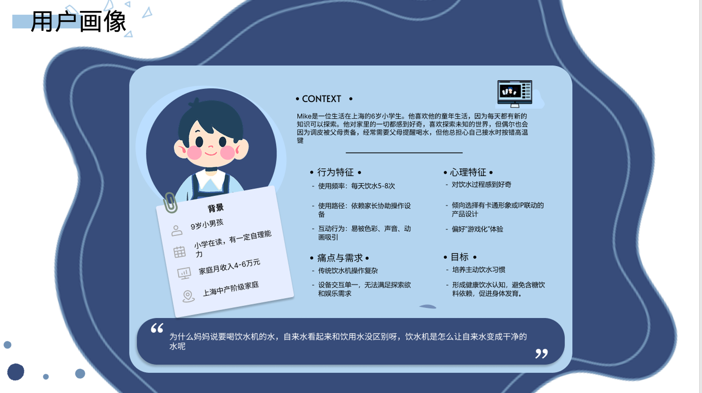
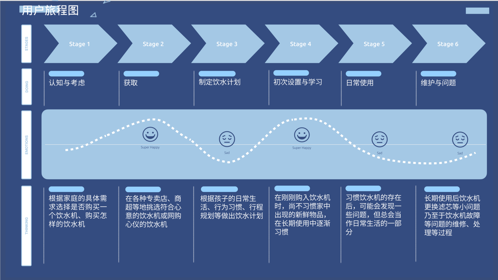
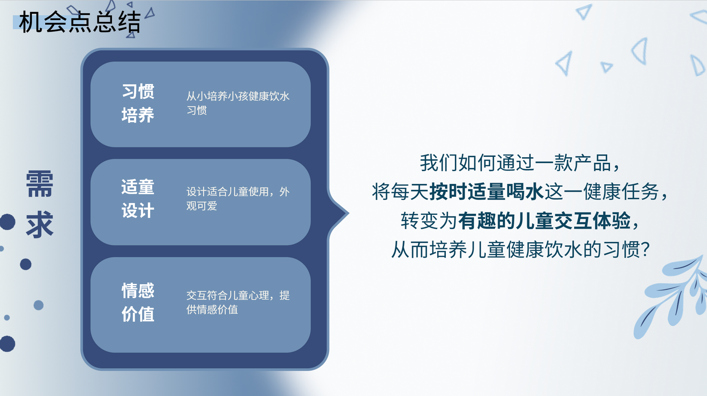
水杯/出水/储水结构通过可爱的产品语言降低“工具感”，让设备更接近儿童日常伙伴。
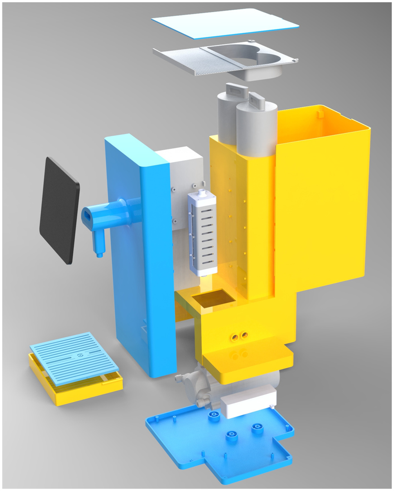
企鹅形象、进度、任务、商店和收集系统，让喝水被转译成游戏式反馈。
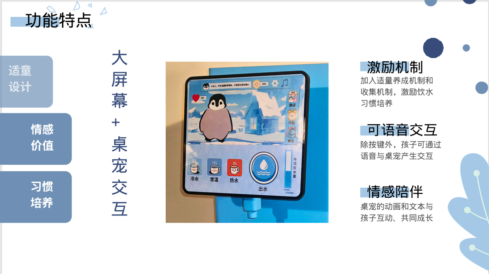
不是只给孩子提醒，也让家长获得柔性的陪伴和数据反馈。
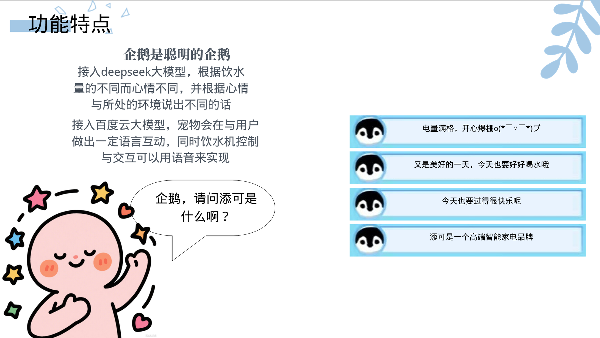
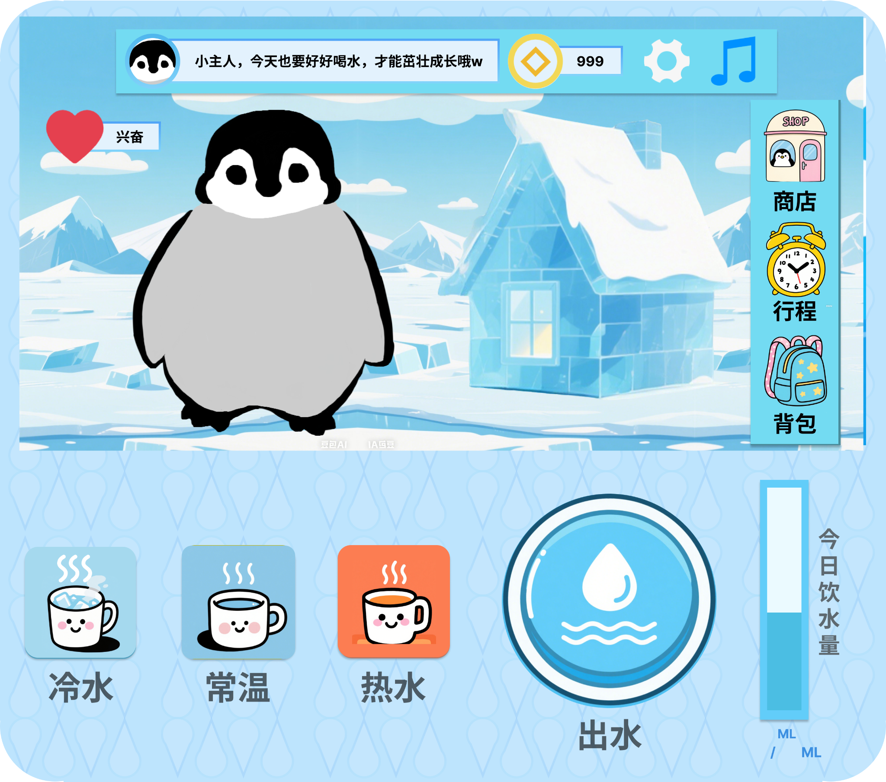
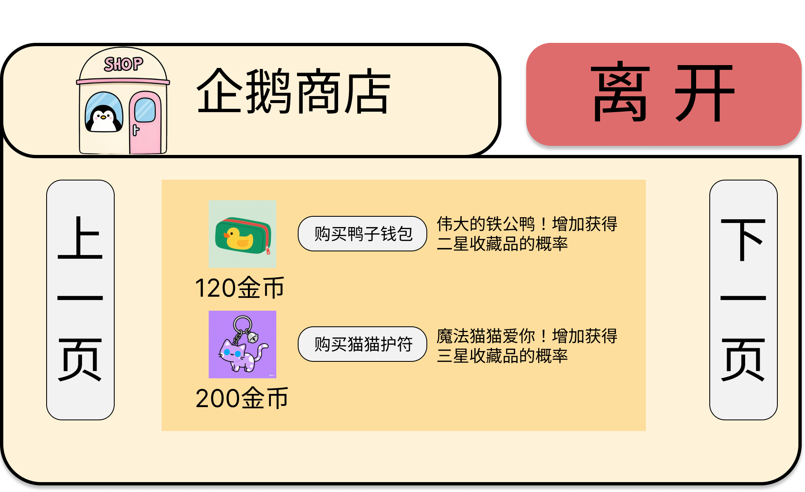
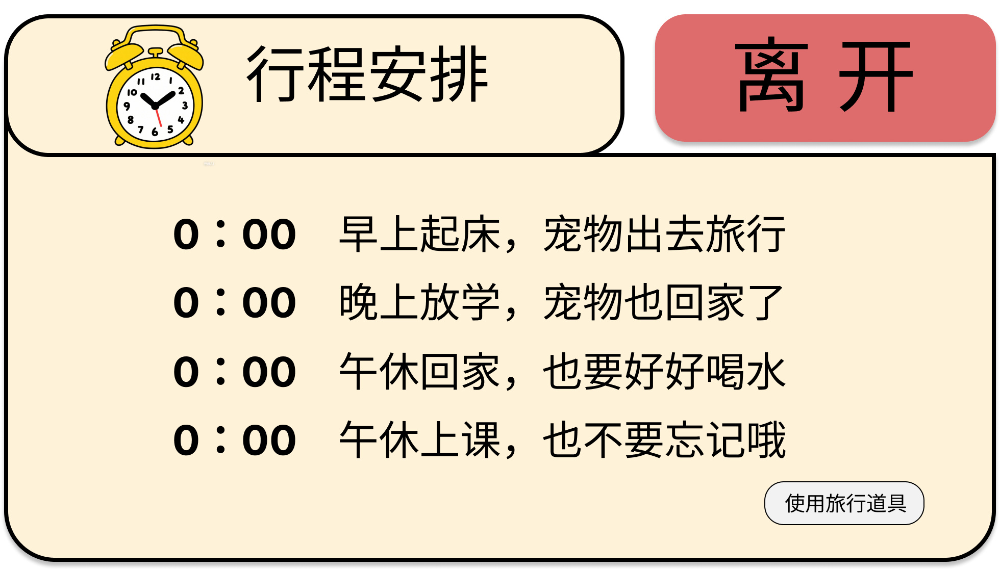
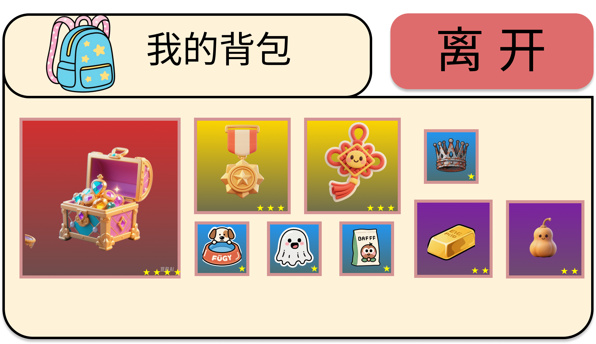
横向滑动查看程序关键界面。
不把所有大图硬塞在一屏，而是用章节、折叠、滑图和水滴反馈组织内容。
返回作品地图